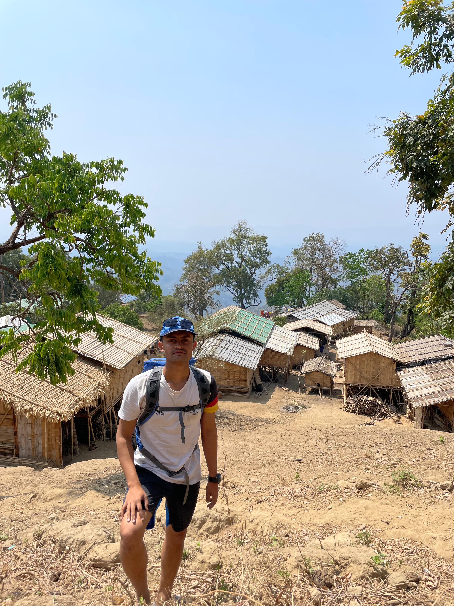
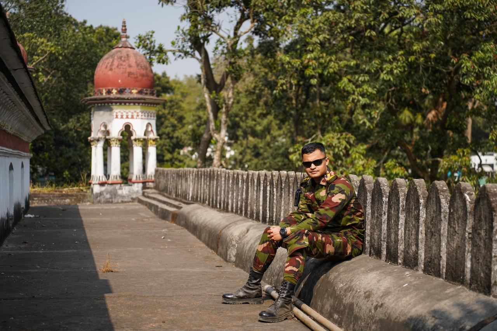
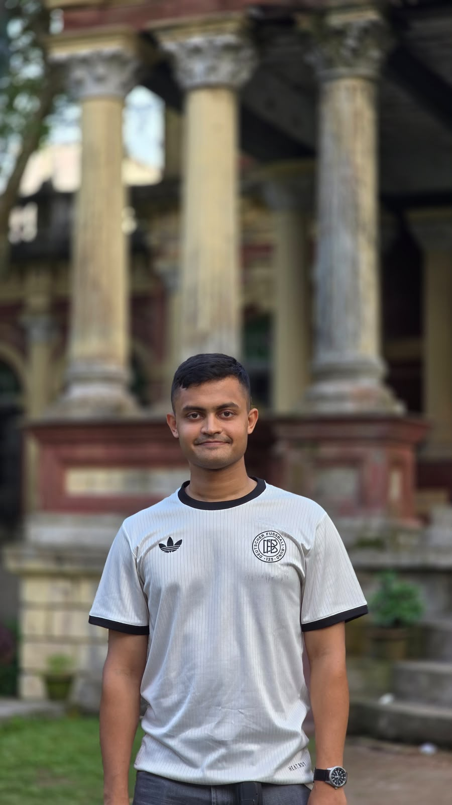
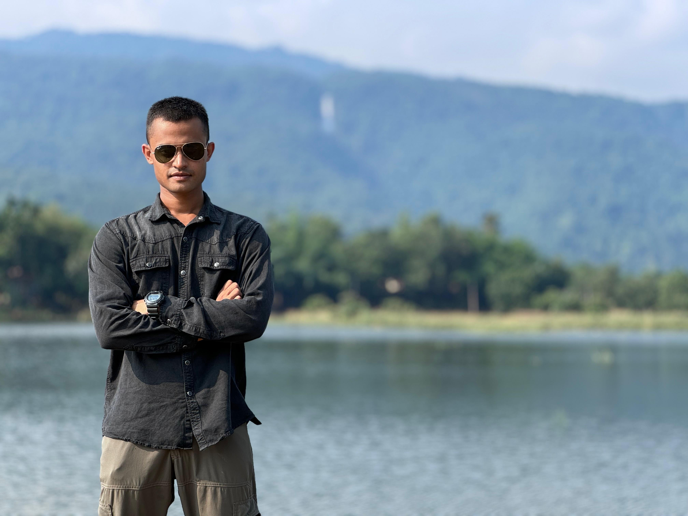

Beyond work / 02
A little more personal.
A few of the interests that keep me curious, creative, and connected beyond professional life.
Interests & hobbies
Five pursuitsReading books
Exploring new ideas, stories, and perspectives one page at a time.
Travelling
Discovering new places, cultures, and the moments in between.

Video games
Enjoying thoughtful worlds, strategy, and shared challenges.
Oil painting & sketches
An interest in colour, texture, lines, and creative expression.
More about this interestCoding
Building, learning, and turning ideas into useful digital experiences.
 Python
Python JavaScript
JavaScript Java
Java C++
C++
Oil painting & sketches
Art & expressionI enjoy oil painting and sketches—from colour, texture, and brushwork on canvas to the lines and shading of a sketch.
Personal gallery
Travel & memories

